MIDI Setup¶
We're going to move on to MIDI recording and editing in this and the next few chapters. The first step is to set up a MIDI keyboard so that you can play notes into Waveform. If you don't have a MIDI keyboard, you can enter notes manually into the MIDI editor, or you can use the computer keyboard as a virtual MIDI device.
The setup is quite simple. We are using a USB external keyboard controller, but the setup works much the same for other types of controllers.
MIDI Drivers¶
Before you dive in here, you might need drivers for your controller. Check the manufacturer's website for drivers for the controller model and your operating system. With Waveform closed, download and install the drivers. Once you've done that, the rest is easy.
Set Up the MIDI Inputs¶
Go to the Settings tab, MIDI devices page. You will see a list of all available MIDI inputs and outputs that are connected to your system. In this example I have four of them. To enable the MIDI inputs and outputs, click to toggle between Enabled and Disabled next to each entry.
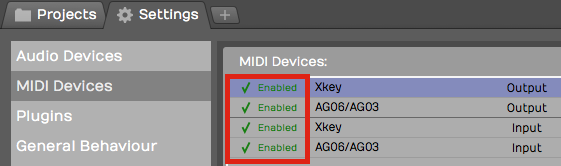
Click to Enable/Disable MIDI Inputs and Outputs
💡 Tip: If you don't see your devices listed, make sure the controller is connected and has power. If that checks out, then make sure the latest drivers are installed. At any time you can click Scan for new MIDI devices now to initiate a scan for connected MIDI devices.
Naming MIDI Inputs/Outputs¶
From the Settings tab, MIDI Devices page, click on a MIDI input or output in the MIDI devices list. Notice that in properties, there is an Alias value. Edit that to give your MIDI input or output a friendly name. I often make this match the name of the controller that is connected.
💡 Tip: You can customize Alias for a specific Edit, by selecting the input in the Edit tab and changing it in properties. Changing Alias on the Edit tab takes precedence over the Alias property in the Settings tab.
Disabling Unused MIDI Inputs¶
Your audio interface might also include MIDI in and out hardware connections. Those allow connecting legacy controllers that don't support USB. If you don't plan to use the hardware MIDI in and out connections, you can leave them disabled. In this example we have disabled.
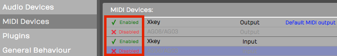
Disable Unused MIDI I/O
This hides those from the selection list when setting up a track.
Configuring the Track¶
Back in your Edit, choose a blank track or create a new one.
- Click on an input and select the MIDI input that matches the controller you just configured.
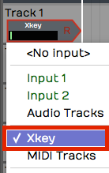
Select the MIDI Input Device
- Play some notes on your keyboard. You will see the meter registering the MIDI activity on that track.
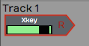
Input Meter Activity
- With the input selected look in properties. Turn on Enable Input Monitoring if it isn't already on.
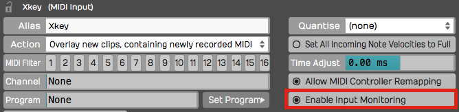
Enable MIDI Input Monitoring
With this done, MIDI events come into the track from your keyboard and the pass through to the virtual instrument that we're going to setup next.
Insert a Synth Plugin¶
To hear what you play, you will need to insert a virtual instrument. Use the Browser Search tab to locate a synth plugin. In this example we are using the Waveform FM Synth.
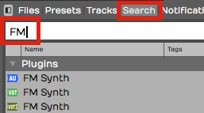
Search for a Synth Plugin
- Insert your synth plugin ahead of the Volume & Pan plugin. By ahead, we mean ahead in the signal path. So in this example, we have dropped FM Synth to the left of Volume & Pan.
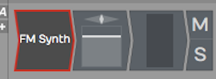
FM Synth Installed in the Mixer
- Play some notes on your keyboard and at this point you should hear synth notes.
📝 Note: There is no difference between a MIDI track and an audio track in Waveform. To configure a MIDI track, just set a MIDI input and insert a virtual instrument plugin as a sound generating source. Then, as you record your performance, you'll create a MIDI clip instead of an audio clip like we did in the previous examples.
Using a Virtual Keyboard¶
If you don't have a physical MIDI keyboard, you can use your computer qwerty keyboard to play notes. Here is how to set it up:
- Go to the Settings tab, MIDI Devices page
- Click Create New Virtual MIDI Input
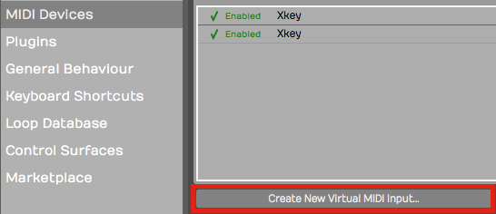
Create New Virtual MIDI Input
- Enter a name such as 'Qwerty Piano' into the Virtual MIDI device dialog box
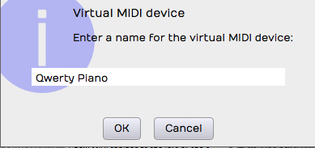
Name the Virtual MIDI Device
- Back in your Edit create a track
- Choose Qwerty Piano as the input
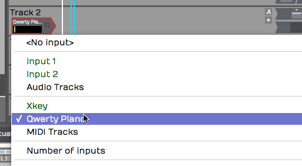
Select the Virtual Device as the Input
- Notice the piano keyboard along the bottom of the screen. To play the keyboard first click on any key with the mouse then use keys A,S,D,F,G,H,J,K,L as white keys. Use W, E,T,Y,U,O,P as black keys. This virtual keyboard lets you play notes in the range from C4 to E5.
💡 Tip: Click the 'lock' icon in the upper left corner of properties. This locks the Waveform keyboard to the Virtual MIDI Piano feature. Also, when attempting to record, it helps to start recording using a keyboard shortcut. If you click record, the qwerty piano loses focus until you click a key on the virtual keyboard.
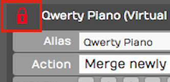
Lock the Input properties While Playing the Virtual
📝 Note: When you are finished using the virtual keyboard, unlock properties by clicking on the lock icon again. It will stay stuck on the virtual keyboard until you do that.
The MIDI Typing Window¶
The virtual keyboard along the bottom of the screen is one way to play notes from your computer keyboard. The MIDI Typing window is another — a small floating window with a wider key range and on-screen octave and velocity controls. It's handy when you want to audition or record an idea and don't have a controller plugged in.
This is available in Waveform 14 and later, in all editions.
Show it with the command Show or hide the MIDI Typing window, or from the View menu's Show MIDI Typing item (which appears only when the Use computer keyboard for MIDI input setting is on — see Reference: Settings > MIDI Devices).

The MIDI Typing window
Typing is armed by Caps Lock (or by giving the window focus). Once
armed, the keys a w s e d f t g y h u j… play a piano layout. The
window also has:
- Octave — Press Z or X to shift down or up. (Range 0–9, Default: 5)
- Velocity — Press C or V to lower or raise it in steps of 5. (Range 0–127, Default: 98)
A gear icon opens a list where you can remap the keys to your liking.
📝 Note: Notes from the MIDI Typing window always play on MIDI channel 1. There's no channel selector.
Managing Hardware Patch Names¶
If you play external hardware synths, Waveform can show their patches by name instead of by raw program number. The MIDI program names dialog manages these named patch lists.
There's no menu command or shortcut — you reach it from a MIDI output device. Go to Settings > MIDI Devices, click a MIDI output device, and in properties open the Program Names dropdown. Add creates a named set from a preset, Edit opens the dialog to modify the selected set, and Delete removes one.

The MIDI program names dialog
Inside the dialog:
- Bank name — A combo box for the 16 banks, with a Rename button.
- Program name list — 128 editable rows; press Tab to advance to the next one.
- MSB / LSB — The bank-select bytes for the current bank. (MSB 0–128, LSB 0–256)
- Options menu — Use zero based numbering, Set current bank to
General MIDI names, Reset, Clear, Export all banks… (to a
.trkmidifile), and Import all banks… (from.trkmidior.midnam).
Click Done to save. These patch lists are shared across all your edits.
Synchronisation¶
If you run Waveform alongside external timecode-aware gear - a hardware recorder, a video deck, or another DAW - you can lock the two together so they play in step. The Sync menu collects the project-wide settings for this: a timecode offset, MIDI Timecode (MTC) input, and MIDI Machine Control (MMC). A typical scenario is chasing an external MTC master so Waveform follows when that device starts, stops, and locates.
You'll find these under the Edit tab's main menu. Click the main menu button and choose Sync.
There's no default keyboard shortcut for the Sync menu or its items - assign one via Settings > Keyboard Shortcuts if you use them often.

The Sync menu on the Edit tab
Setting a timecode offset¶
- Open Sync > Change timecode offset….
- In the Change MIDI timecode offset dialog, type the offset using the timecode field.
- Click OK. Incoming and outgoing timecode is now shifted by that amount, which is handy when your external source starts a few frames away from where you want Waveform's transport to land.
Chasing external MTC¶
- Enable the MIDI input that carries timecode (Settings > MIDI Devices), as described earlier in this chapter.
- Open Sync > MIDI timecode input device and pick that device. Set it to <None> to stop chasing.
- If the master sends an hour value you don't want to follow, turn on Ignore hours from incoming timecode.
Menu reference¶
- Change timecode offset… - opens the Change MIDI timecode offset dialog. (Default: 0)
- Ignore hours from incoming timecode - a toggle; when on, the hours field of incoming MTC is ignored. (Default: off)
- MIDI timecode input device - the MIDI input Waveform chases for MTC, or <None>.
- Respond to MIDI machine control from device - the MIDI input whose MMC transport commands (play/stop/locate) Waveform obeys, or <None>.
- Send MIDI machine control to device - the MIDI output to which Waveform sends MMC transport commands, or <None>.
📝 Note: The MTC input and MMC device lists only show inputs and outputs you've already enabled. If a device is missing, enable it on the Settings > MIDI Devices page first.
💡 Tip: This menu is for making Waveform follow external timecode. To make Waveform the master instead, turn on Send MIDI Timecode on the MIDI output that's wired to your gear (see Reference: Settings > MIDI Devices).
Moving On¶
In the next chapter, you'll learn how to record a MIDI performance onto the track!